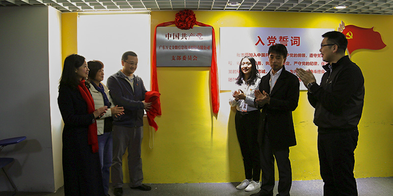
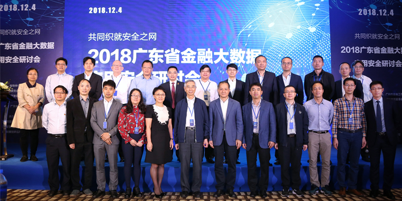

万丈金数2018年度总结表彰大会暨2019万丈之夜年会盛典圆满举行
万丈动态 2019-01-21
2019年1月19日，“进化的力量”万丈金数2018年度总结表彰大会暨“梦想的温度”2019万丈之夜年会盛典圆满举行。与时间做朋友，我们一起见证并创造着越来越好的万丈，美好时光都已记录，接下来，我们一起来全景回顾这场盛会。
READ MORE >

万丈金数举行党支部成立大会暨揭牌仪式
万丈动态 2018-12-18
2018年12月18日上午，正值改革开放40周年纪念之际，中共广东万丈金数信息技术股份有限公司支部委员会正式挂牌成立。天园街道党工委委员、办事处副主任赵胤东、天园街道党政办副主任施高海、科韵社区党委书记廖年华、科韵社区居委主任蒋华平、万丈金数董事长李廷威以及公司全体党员出席了党支部成立大会暨揭牌仪式。
READ MORE >

广东在行动：金融大数据既要图发展也要保安全
万丈动态 2018-12-06
2018广东省金融大数据应用安全研讨会12月4日在广州召开，中国工程院院士倪光南出席会议并发表主题演讲。本次研讨会由广东省大数据协会主办，广东万丈金数信息技术股份有限公司、天河智慧城大数据产业联盟、广州金融大数据创新应用产学研联盟共同承办，广东省公安厅网警总队、广东省工业和信息化厅、广东省科技厅、广州市工业和信息化委员会、广州市金融工作局、广州市公安局网络警察支队、广州市工商管理局、广州高新技术产业开发区天河科技园管理管委会等相关政府部门以及新华社、人民网等媒体给予了大力支持。
READ MORE >
加载更多